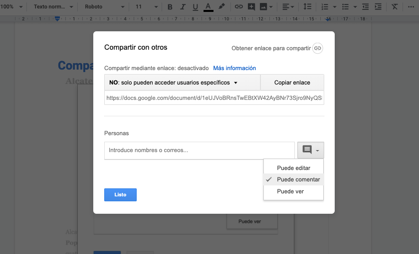
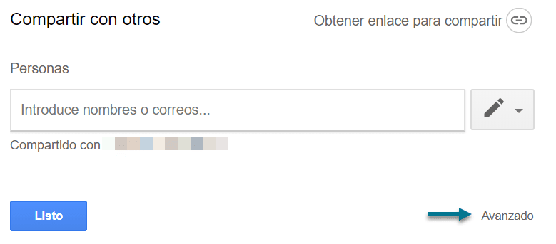
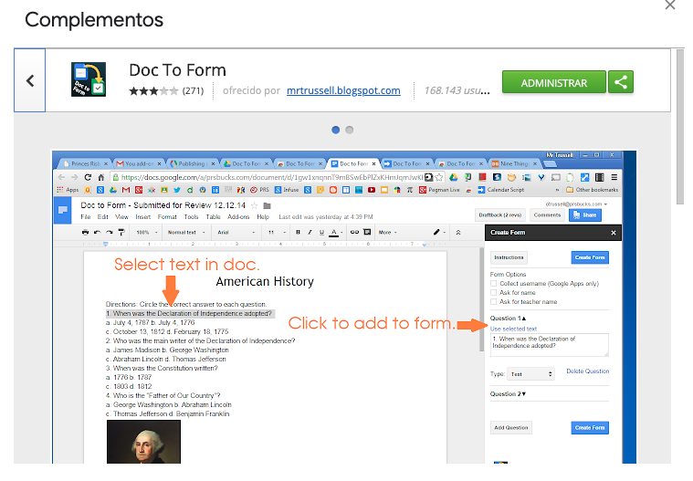
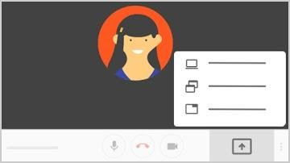
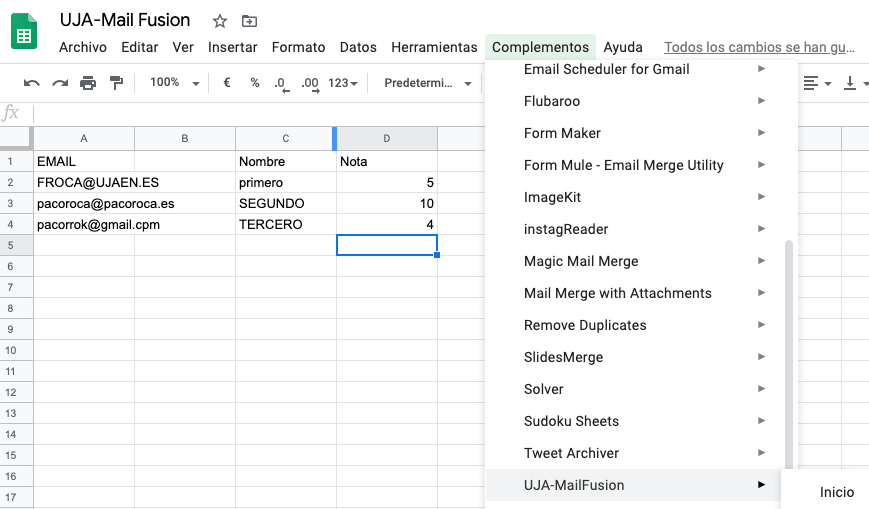

|
|
|
|


Introducción
El presente curso pretende servir de orientación para afrontar el inicio del curso académico 2020/2021, tanto en una eventual situación semipresencial, presencial o incluso online.
Contenidos
Se pretende utilizar las Herramientas de GSuite para elaborar y transformar el contenido docente de cara a los posibles escenarios de la "nueva Normalidad". Se verá cómo generar contenido docente o transformar el disponible, así como realizar las sesiones de trabajo.
Nota final
El contenido no es estático, y lo iremos mejorando con las dudas, sugerencias y aportaciones que recibamos. Cualquier colaboración es bienvenida.
Comparte con otros y edita en tiempo real

Una de las ventajas de Google Docs respecto a Office u otras suite de ofimática es la facilidad con la que podemos compartir nuestros documentos y entre varias personas editar el texto que estemos realizando.
Deberemos pulsar el botón azul en la esquina superior derecha y podemos o añadir personas o directamente copiar el enlace y enviarlo para que cualquier persona pueda ver el texto. Sin duda una de las funciones más prácticas y útiles de Docs.
Cómo convertir cualquier PDF a texto
Preparar el archivo
Sigue estos consejos para obtener los mejores resultados:
- Formato: puedes convertir archivos .JPEG, .PNG, .GIF y PDF (documentos de varias páginas).
- Tamaño del archivo: el archivo no debe tener más de 2 MB.
- Resolución: el texto debe tener una altura de 10 píxeles como mínimo.
- Orientación: los documentos deben estar orientados correctamente. Si la imagen está mal colocada, gírala antes de subirla a Google Drive.
- Idiomas: Google Drive detecta el idioma del documento.
- Fuente y conjunto de caracteres: utiliza fuentes comunes (Arial o Times New Roman, por ejemplo).
- Calidad de la imagen: las imágenes nítidas con iluminación regular y contraste claro funcionan mejor.
Convertir un archivo de imagen
- Abre drive.google.com en el ordenador.
- Haz clic con el botón derecho en el archivo que quieras convertir.
- Haz clic en Abrir con
 Documentos de Google.
Documentos de Google. - El archivo de imagen se convierte en un documento de Google, pero es posible que en la transferencia se pierda algo de formato:
- Lo más seguro es que se conserven el formato de negrita, de cursiva, el tipo y el tamaño de la fuente y los saltos de línea.
- En cambio, es poco probable que se detecten las listas, las tablas, las columnas y las notas a pie o al final de la página.
Escanear documentos con el móvil
Desde el móvil es inmediato escanear documentos y convertirlos en un PDF que se suba al Drive. Los pasos a seguir son los siguientes:
- Abre la aplicación Google Drive
 .
. - Abajo a la derecha, toca Añadir .
- Toca Escanear
 .
. - Haz una foto del documento que quieras escanear.
- Ajustar el área de escaneado: toca Recortar .
- Repetir la foto: toca Volver a escanear la página actual
 .
. - Escanear otra página: toca Añadir
 .
.
- Para guardar el documento terminado, toca Listo .
Puedes escribir y editar un documento dictando lo que quieras en las notas del orador de Documentos o de Presentaciones de Google.
Nota: Esta función solo está disponible en los navegadores Chrome.
Paso 1: Activa el micrófono
El micrófono de tu ordenador debe funcionar y estar activado para usar los comandos de voz o de dictado por voz.
La configuración del micrófono varía según el dispositivo, consulta el manual de tu ordenador para ver las instrucciones. En un Mac, el micrófono se suele configurar en las Preferencias del Sistema, mientras que en un PC se hace en el Panel de control.
Paso 2: Usa el dictado por voz
Escribe con tu voz
Iniciar la escritura por voz en un documento
- Comprueba que el micrófono funciona.
- Abre un documento de Documentos de Google en el navegador Chrome.
- Haz clic en Herramientas Escritura por voz. Aparecerá un micrófono.
- Cuando quieras empezar a hablar, haz clic en el micrófono.
- Habla claro, a un volumen y un ritmo normales (consulta la sección de más abajo para obtener información sobre cómo usar la puntuación).
- Cuando termines, vuelve a hacer clic en el micrófono.
Corregir errores mientras dictas
- Si cometes un error al dictar, puedes mover el cursor hasta el error y arreglarlo sin tener que desactivar el micrófono.
- Una vez solucionado, mueve el cursor de nuevo a la sección donde quieras continuar.
Añadir puntuación
Di estas palabras para añadir signos de puntuación al texto:
- Punto
- Coma
- Signo de exclamación
- Signo de interrogación
- Nueva línea
- Nuevo párrafo
Notas:
- En español, deben escribirse los signos de puntuación que aparecen al principio de la frase, como ¡ o ¿.
- Se pueden usar los comandos de voz para editar o dar formato al documento (en inglés), como por ejemplo: "Select paragraph" (seleccionar párrafo), "Italics" (cursiva) o "Go to the end of the line" (ir al final de la línea).
Compartir un único archivo
- En un ordenador, ve a Drive o a Documentos
- Haz clic en el archivo que quieras compartir.
- Haz clic en Compartir o en el icono Compartir
 .
.
Compartir con determinadas personas
- Selecciona el archivo que quieras compartir.
- Haz clic en Compartir o en el icono Compartir .
- En "Compartir con personas y grupos", introduce la dirección de correo electrónico con la que quieras compartir el archivo.
- Importante: Puedes compartir solo con los miembros de la UJA (usando tu ciuenta de la UJA)
- Para cambiar qué pueden hacer los usuarios con tu documento, a la derecha, haz clic en la flecha hacia abajo

 Lector, Comentador o Editor.
Lector, Comentador o Editor. - Elige qué quieres notificar a las personas.
- Si quieres notificar a las personas con las que has compartido un documento, marca la casilla junto a Notificar a las personas. Si quieres avisar a los usuarios de que compartes un archivo con ellos, cada dirección de correo electrónico que introduzcas se incluirá en el correo.
- Si no quieres notificar a las personas, desmarca la casilla.
- Haz clic en Compartir o en Enviar.
Compartir un enlace al archivo
Puedes enviar un enlace para que quienes lo tengan puedan usar el archivo.
Compartir un archivo y colaborar con 100 personas (o más)
Hasta 100 personas pueden ver, editar o comentar un archivo de Documentos, Hojas de cálculo o Presentaciones de Google al mismo tiempo. Si hay más de 100 personas viendo un archivo, solo pueden editarlo el propietario y algunos usuarios con permisos de edición.
- Si necesitas que muchas personas vean un archivo al mismo tiempo, publícalo y crea un enlace para compartirlo. Luego puedes dar permiso para editarlo o comentarlo a quienes lo necesiten. Consulta cómo publicar un archivo.
Publicar un archivo
- Arriba, haz clic en Archivo Publicar en la Web.
- Elige una opción de publicación:
- Haz clic en Publicar.
- Copia la URL y envíasela a cualquier persona que quieras que vea el archivo. O bien, insértala en tu sitio web

Opciones de comentarios
Ver todos los comentarios
- En un teléfono o tablet Android, abre un archivo en la aplicación Documentos, Hojas de cálculo o Presentaciones de Google.
- En la parte superior de la pantalla, toca Comentarios .
Añadir comentarios
- En un teléfono o tablet Android, abre un archivo en la aplicación Documentos, Hojas de cálculo o Presentaciones de Google.
- Selecciona el texto o la celda y toca Añadir comentario o Comentar.
- Añade el texto.
- Toca Comentar.
Responder a los comentarios
Después de tocar un comentario específico, puedes:
- Editar un comentario: toca Editar . Haz los cambios y toca Guardar.
- Responder a un comentario: en la parte inferior, toca Responder.
- Resolver un comentario: encima del comentario, toca Resolver.
- Ir de un comentario a otro: desliza el dedo hacia la derecha o hacia la izquierda.
- Eliminar un comentario: toca Editar y, después, toca el icono de la papelera
 .
. - Volver a la vista de edición: en la esquina superior derecha, toca CERRAR o el icono de cerrar .
Enviar un comentario a una persona específica
Para asegurarte de que una persona vea un comentario, puedes añadirla y recibirá una notificación por correo electrónico con tu comentario.
- En un teléfono o tablet Android, abre un archivo en la aplicación Documentos, Hojas de cálculo o Presentaciones de Google.
- Escribe un comentario.
- En cualquier parte del comentario, añade el nombre. Cuando aparezca la persona correcta, toca su nombre. También puedes añadir la dirección de correo electrónico de la persona que quieres que vea el mensaje.
- Toca COMENTAR.
Aceptar o rechazar un cambio sugerido
Si alguien sugiere un cambio en un documento de tu propiedad, puedes aceptarlo o rechazarlo. Esta función solo está disponible en Documentos de Google.
- En un teléfono o tablet Android, abre un documento en la aplicación Documentos de Google.
- Para ver la sugerencia, toca Sugerencia.
- Toca Aceptar o Rechazar.
Nota: Si cambias de opinión sobre una sugerencia que has aceptado, toca Deshacer.

Puedes utilizar los comentarios para asignar tareas con tu cuenta del trabajo o de tu centro educativo.
Asignar una tarea en un comentario
- En un teléfono o tablet Android, abre un archivo en la aplicación Documentos, Hojas de cálculo o Presentaciones de Google.
- Resalta el texto, las imágenes, las celdas o las diapositivas que quieras comentar.
- Para añadir un comentario, toca Insertar .
- Toca Comentar.
- Escribe tu comentario.
- En alguna parte del comentario, escribe @ o + justo delante de la dirección de correo electrónico de la persona a la que quieras asignárselo.
- Toca la casilla situada junto a "Asignar a [nombre]".
- Toca Asignar. La persona a la que hayas asignado la tarea recibirá un mensaje de correo electrónico.
Reasignar una tarea
- En un teléfono o tablet Android, abre un archivo en la aplicación Documentos, Hojas de cálculo o Presentaciones de Google.
- Toca el texto que tenga un comentario.
- Toca Ver comentario.
- Toca Responder.
- Escribe tu comentario.
- En alguna parte del comentario, escribe @ o + justo delante de la dirección de correo electrónico de la persona a la que quieras asignárselo.
- Toca la casilla situada junto a "Reasignar a [nombre]".
- Toca Enviar
 . La persona a la que hayas asignado la tarea recibirá un mensaje de correo electrónico.
. La persona a la que hayas asignado la tarea recibirá un mensaje de correo electrónico.
Marcar una tarea como completada
- En un teléfono o tablet Android, abre un archivo en la aplicación Documentos, Hojas de cálculo o Presentaciones de Google.
- En la esquina superior derecha del comentario, toca Marcar como completada.
Ver los seguimientos de un documento
- En un teléfono o tablet Android, abre la aplicación Documentos, Hojas de cálculo o Presentaciones de Google.
- Toca el número situado en la esquina superior derecha de un documento. Si no ves ningún número, significa que no hay seguimientos para ese documento.
- Puedes ver el número de:
- Tareas abiertas
- Sugerencias abiertas
- Para ir a la primera tarea o sugerencia, toca una opción de la lista.
- Para cerrar el menú, toca el número.
Las extensiones de Chrome Web Store te permiten personalizar Chrome y añadirle características y funciones.
Instalar una extensión
- Abre Chrome Web Store.
- Busca una extensión y selecciónala.
- Haz clic en Añadir a Chrome.
- Algunas extensiones te informan si necesitan determinados permisos o datos. Para aprobar las solicitudes, toca Añadir extensión.
Si quieres usar la extensión, haz clic en el icono situado a la derecha de la barra de direcciones.
Si usas un ordenador del trabajo o de clase, es posible que tu organización bloquee algunas extensiones.
Utilizando la extensión del navegador Comment Visualizer for Google Docs™ es posible visualizar en el lateral todos los comentarios que hay a lo largo del documento con lo que es bastante sencillo tenerlos controlados

Con la extensión de Chrome DocuViz es posible generar la visualización de la revisión del historial en un documento en coautoría en Google Docs. Codifica por colores quién editó qué, cuándo y dónde. El tiempo pasa de izquierda a derecha. Las columnas de color más oscuro representan contenido de revisión; y las columnas de color más claro representan los enlaces entre columnas. Al extender la función de Historial de revisiones existente en Google Docs, DocuViz muestra todo el historial en una vista de flujo de historial en lugar de la vista de una revisión a la vez. Puede revelar la evolución del documento y los patrones de colaboración de los coautores.

Draftback le permite reproducir el historial de revisiones de cualquier documento de Google que pueda editar. Es como retroceder en el tiempo en una película. Permite detectar corta+pega masivos.
https://chrome.google.com/webstore/detail/draftback/nnajoiemfpldioamchanognpjmocgkbg

Enlace: https://gsuite.google.com/marketplace/app/highlight_tool/65634221687

- Haz clic en Complementos Obtener complementos.
- Coloca el cursor sobre un complemento para ver una descripción breve. Para ver la descripción completa, haz clic en el complemento.
- Para instalar el complemento, haz clic en InstalarContinuar.
- Por lo general, aparecerá un mensaje en el que se solicita acceso a los datos que el complemento necesita para funcionar. Lee el mensaje y haz clic en Permitir.
- Una vez instalado el complemento, haz clic en Listo.
Podemos lograr la generación automática del PDF para el documento que queramos, solamente agregando un código a la dirección del documento.
Solamente debemos ir al botón azul de COMPARTIR

Damos click en la palabra Avanzado

En la sección de Enlace para compartir, tomamos la dirección del documento, y vemos que termina con edit/?usp=sharing

Si cambiamos esa terminación por export?format=pdf,(puedes copiar y pegar la dirección en otro lado para que la puedas editar cómodamente), tendremos listo nuestro link para compartir. Debe quedar algo parecido a esto:
https://docs.google.com/document/d/1YUG9-nkKxmg-c_W1sMRxYf01s/export?format=pdf
Si compartes el link de esa manera, Google Docs automáticamente generará un PDF para descarga, siempre con los últimos cambios que tengas hasta ese momento.
Establecer una fecha de caducidad de acceso a un archivo
- En Drive, abre el archivo.
- Haz clic en Compartir.
- Si el archivo no se ha compartido aún, compártelo.
- Haz clic en Avanzado.
- Coloca el cursor sobre el nombre de la persona y haz clic en Establecer caducidad
 .
. - Cambia la fecha de vencimiento del acceso.
- Haz clic en Guardar cambios y, a continuación, en Listo.
Nota: No puedes poner la fecha de vencimiento en el día en el que estás. Si tienes que restringir el acceso de inmediato, deja de compartir el archivo.
- Ir al diálogo para compartir,
- Seleccionar "obtener enlace para compartir",
- Seleccione "cualquier persona con enlace puede ver", luego selecciona "copiar enlace".
Debería tener un enlace que se vea así:
https://docs.google.com/spreadsheets/d/<spreadsheetID>/edit?usp=sharing
- Cambiar la última parte a /copy en lugar de /edit?usp=sharing,
debería verse así:
https://docs.google.com/spreadsheets/d/<spreadsheetID>/copy
- Usar ese enlace cuando se comparta y la persona con la que está compartiendo recibirá un mensaje para "hacer una copia" cuando hagan clic eso.
También puede marcar ese enlace para que aparezca el mensaje "hacer una copia" si lo está utilizando para una plantilla.
http://docs.google.com/document/d/1.../edit?usp=sharing
http://docs.google.com/document/d/1.../export?format=pdf
http://docs.google.com/document/d/1.../copy
Una manera muy práctico de generar tests o exámenes de manera rápida y realmente relacionada con el contenido a estudiar es utilizando la extensión de Google Docs denominada Doc to Form. Permite seleccionar de manera rápida contenidos de un documento de Google y convertirlos de manera automática en un Google Forms.

Crear slides
Paso 1: Crea una presentación
Para crear una presentación:
- Abre la pantalla de inicio de Presentaciones en slides.google.com.
- Arriba a la izquierda, en "Crear una presentación", haz clic en Nueva . Al hacerlo, se abrirá una presentación nueva.
También puedes crear presentaciones desde la URL slides.google.com/create.
Paso 2: Edita una presentación y dale formato
Puedes añadir texto, imágenes o vídeos a una presentación, editarlos o darles formato.
- Insertar y organizar texto, formas y líneas
- Añadir, eliminar u organizar diapositivas
- Cómo añadir animaciones a una diapositiva
Paso 3: Comparte contenido y trabaja con otras personas
Puedes compartir carpetas y archivos con otras personas y darles permiso para que los vean, editen o comenten.

Crea y edita de forma simultánea presentaciones con tu equipo, directamente desde el navegador. Colabora en propuestas empresariales, presentaciones de proyectos, módulos de formación y mucho más. Todos los cambios se guardan automáticamente. |

1. Añade y edita contenido de tus diapositivas.
2. Añade y organiza diapositivas.
| Crear diapositivas: en la barra de herramientas, haz clic en Nueva diapositiva . También puedes seleccionar la flecha hacia abajo |
| Mover diapositivas: arrastra la diapositiva que quieres mover a una posición diferente en la presentación. Para mover varias diapositivas a la vez, mantén pulsada la tecla Ctrl y haz clic en las diapositivas para seleccionarlas antes de arrastrarlas. |
| Eliminar diapositivas: haz clic con el botón derecho en una diapositiva y selecciona Eliminar. |
Duplicar diapositivas: haz clic con el botón derecho en una diapositiva y selecciona Duplicar diapositiva. |

 y elegir el diseño de la nueva diapositiva.
y elegir el diseño de la nueva diapositiva.

3. Trabaja con distintas copias y versiones de tu presentación.
Importar diapositivas: añade a la presentación diapositivas de otra presentación.
Hacer una copia: crea un duplicado de la presentación. Esta opción resulta muy útil para crear plantillas.
Descargar como: descarga la presentación en otro formato, como Microsoft® PowerPoint® o Adobe® PDF.
Enviar por correo electrónico como archivo adjunto: envía una copia de la presentación por correo electrónico.
Historial de versiones: consulta todos los cambios que se han hecho en la presentación o vuelve a una versión anterior.
Publicar en la Web: publica una copia de tu presentación como página web o insértala en un sitio web.

4. Haz clic en Compartir para compartir la presentación y, a continuación, elige lo que pueden hacer los colaboradores, que también recibirán una notificación por correo electrónico.
Compartir o dejar de compartir contenido | Editar contenido directamente | Añadir comentarios | |
Editor | ✔ | ✔ | ✔ |
Comentador | ✔ | ||
Lector |
5. Colabora con tu equipo en tiempo real.

Ampliación: https://www.google.es/intl/es/slides/about/
Compartir para presentar
- Únete a una videollamada.
- En la esquina inferior derecha, selecciona Mostrar mi pantalla.
- Selecciona Toda la pantalla, Una ventana o Una pestaña de Chrome.
- Al mostrar una pestaña de Chrome, se reproduce de manera predeterminada el audio de dicha pestaña.
- Si quieres cambiar de pestaña, selecciona Cambiar fuente en la parte inferior de la pantalla.
- Selecciona el contenido que quieras compartir.
- Selecciona Compartir.
- Si ya hay alguien mostrando su pantalla, confirma que quieres pasar a mostrar la tuya.

Si tienes la cámara activada, los participantes seguirán viendo tu vídeo mientras estés mostrando la pantalla.
Compartir para interactuar
Comparte el documento, Slide, Jamboard desde el propio archivo, con lo que los asistentes pueden interactuar además de no perder calidad en el contenido de la imagen.

Iniciar una sesión de Preguntas
- Abre una presentación en Presentaciones de Google.
- En la parte superior, junto a "Iniciar presentación", haz clic en la flecha hacia abajo
 .
. - Haz clic en Vista de presentador.
- En la ventana que se abre, haz clic en Herramientas de la audiencia.
- Para iniciar una sesión nueva, haz clic en Comenzar una sesión.
- Para seguir con una sesión reciente, haz clic en Continuar con la sesión reciente.
- Para dejar de aceptar preguntas, haz clic en el interruptor para activar o desactivar esta opción en la ventana de Preguntas.
Nota: Si usas Google a través de una cuenta de tu trabajo, centro educativo u otra organización, puedes elegir qué usuarios pueden enviar preguntas:
- En la ventana "Vista de presentador", haz clic en Herramientas de la audiencia y cambia "Se aceptan preguntas de".
Mostrar preguntas de la audiencia
Los presentadores pueden mostrar preguntas de la audiencia durante una presentación.
- En "Herramientas de la audiencia", elige una pregunta que quieras mostrar.
- Haz clic en Mostrar.
Para cambiar de pregunta, elige otra y haz clic en Mostrar.
Para dejar de mostrar una pregunta, haz clic en Ocultar.
Revisar las últimas sesiones
Los presentadores pueden ver las preguntas de las sesiones recientes de Preguntas.
- Abre una presentación en Presentaciones.
- Arriba, haz clic en Herramientas Historial de Preguntas.
- Las últimas sesiones aparecen a la derecha.
Hacer preguntas y votarlas
Los miembros de la audiencia pueden hacer preguntas durante una presentación:
- Ve al enlace situado en la parte superior de la presentación. Ejemplo: goo.gl/diapositivas/a1b.
- Haz clic en Haz una pregunta y escribe tu pregunta.
- Para hacer una pregunta de forma anónima, marca la casilla situada junto a "Preguntar de manera anónima".
- Haz clic en Enviar.
Votar una pregunta
Los miembros de la audiencia pueden votar las preguntas que quieren que se respondan.
- Ve al enlace de Preguntas que aparece en la diapositiva.
- Debajo de la pregunta que te gustaría votar, haz clic en Votar a favor o Votar en contra
 .
.
- Únete a una videollamada de Meet.
- En la esquina inferior izquierda, haz clic en el nombre de la reunión.
Opciones:
- Haz clic en Copiar información
 para copiar los datos que necesitas para unirte a la reunión. A continuación, pega estos datos en un correo electrónico, un chat u otra aplicación y envíalos a los invitados.
para copiar los datos que necesitas para unirte a la reunión. A continuación, pega estos datos en un correo electrónico, un chat u otra aplicación y envíalos a los invitados. - Haz clic en Archivos adjuntos para seleccionar los archivos incluidos en el evento de calendario.
Corrección de ejercicios e interacción
Con la extensión Kaizena es posible mandar las correcciones a los alumnos con voz vídeo etcétera incluidas dentro del propio Google Docs comentarios y las tareas.
Revisión del uso de trabajo en equipo
Con la extensión de Chrome DocuViz es posible generar la visualización de la revisión del historial en un documento en coautoría en Google Docs. Codifica por colores quién editó qué, cuándo y dónde. El tiempo pasa de izquierda a derecha. Las columnas de color más oscuro representan contenido de revisión; y las columnas de color más claro representan los enlaces entre columnas. Al extender la función de Historial de revisiones existente en Google Docs, DocuViz muestra todo el historial en una vista de flujo de historial en lugar de la vista de una revisión a la vez. Puede revelar la evolución del documento y los patrones de colaboración de los coautores.
Con Form Publisher , puede convertir fácilmente los envíos de Formularios de Google en Documentos de Google, Hojas de cálculo de Google o documentos PDF. Con el lanzamiento de la nueva API de Google Slides hoy , nos complace anunciar que ahora también puede generar presentaciones de Google Slides.
Hoy, la mayoría de los usuarios de Form Publisher convierten sus datos de formulario en documentos, pero el 25% de ellos también los muestran como hojas de cálculo. Esperamos que la adición del nuevo tipo de archivo de presentación les brinde aún más opciones y flexibilidad.
Por ejemplo, Revevol , un revendedor de G Suite y nuestra empresa matriz, ofrece muchos entrenamientos. Los capacitadores generalmente hacen una copia del mazo de material de capacitación (en Presentaciones de Google) para cada sesión y luego reemplazan manualmente el nombre del cliente, el nombre del capacitador y la fecha de capacitación. Con la última integración de Google Slides, Form Publisher facilita este proceso.

Una vez que configure Form Publisher en su formulario, cada respuesta del formulario generará una presentación a partir de una copia de la plantilla
Form Publisher es uno de los complementos más populares para Google Forms, y esperamos incorporar futuras mejoras de productos y API a G Suite. Ya estamos planeando permitir que los usuarios carguen imágenes a través de Formularios de Google para agregarlas directamente a su presentación de Presentaciones de Google, pero estén atentos para más información.
Únete a videollamadas estés donde estés, asiste a clases de formación virtual, haz entrevistas remotas y mucho más.Obtener Meet: Web (meet.google.com), Android o iOS |

1. Programar o iniciar una videollamada
Desde Gmail:
| Desde Calendar:
|
Descubre otras formas de Iniciar videollamadas.
2. Unirse a una videollamada
Desde Gmail: En la barra lateral, haz clic en Unirse a una reunióne introduce un código de reunión. | Desde Calendar: Haz clic en el evento y, a continuación, en Unirse a Hangouts Meet. | Desde Meet: Únete a una reunión programada o usa un código de reunión. | Desde dispositivos móviles: Abre la aplicación de Meet para Android o iOS® de Apple®. |
Descubre otras formas de unirse a una videollamada.
3. Personalizar la configuración de vídeo, interactuar con participantes o compartir la pantalla
Puedes generar contenido de vídeo directamente desde Meet:
- Si tienes dificultades, ve a No encuentro el botón de grabación.
- Espera a que empiece la grabación.
Cuando se inicia o se detiene la grabación, los demás participantes reciben una notificación. - Cuando hayas terminado, haz clic en Más Detener grabación.
- También se detendrá la grabación de una reunión si todos sus participantes la abandonan.
- Vuelve a hacer clic en Detener grabación para confirmar la acción.
- Espera a que se genere el archivo de la grabación y se guarde en la carpeta de grabaciones de Meet del organizador, que se encuentra en Mi unidad.
Subir a canal de Youtube
- Inicia sesión en YouTube.
- En la parte superior derecha, selecciona Crear vídeo o publicación Subir vídeo.
- Selecciona el archivo que quieras subir.
detalles: https://support.google.com/youtube/answer/57407?co=GENIE.Platform%3DDesktop&hl=es
Paso 1: Añade la información básica
Paso 2: Selecciona los ajustes avanzados
Paso 3: Añade elementos de vídeo
Este complemento te permitirá fusionar un borrador de correo de Gmail con los datos de una hoja de cálculo GSheet.
Desde una hoja de Google Spredsheet (sheet.new) selecciona "Complementos" y "UJA- Mail Fusion".
Debes tener la primera columna de correos electrónicos con el título "EMAIL" y una plantilla en gmail.

Desde diversos complementos es posible generar correo masivo desde GMail:
Crea un formulario.

Configura y revisa el formulario.
Envía el formulario.
Analiza las respuestas.
Crear eventos reservables (tutorías)
Puedes configurar un bloque para citas en tu calendario para que otros usuarios las reserven. Por ejemplo, los profesores pueden invitar a sus alumnos a que reserven horas durante el horario de tutorías de la semana.
Las horas disponibles son útiles cuando no sabes quién puede necesitar reunirse contigo, pero quieres estar disponible. Puedes ofrecer un bloque de tiempo en tu calendario para que otras personas reserven horas dentro de ese bloque. Por ejemplo, puedes reservarte dos horas para mantener reuniones de 30 minutos, y otras personas pueden reservar después uno de los periodos de 30 minutos a la hora que mejor les venga.
Crear y compartir horas disponibles
¿Qué relación hay entre las horas disponibles y los eventos normales?
Crear un bloque para citas
- En un ordenador, abre Google Calendar con tu cuenta del trabajo o de tu centro educativo.
- Asegúrate de tener abierta la vista Semana o una de Día.
- Haz clic en cualquier parte del calendario. En la ventana de evento que aparece, haz clic en Horas disponibles.
- Escribe los detalles (título incluido) y elige el calendario en el que quieres mostrar el evento.
- Si quieres añadir más información, como una ubicación o descripción, haz clic en Más opciones.
Nota: Si quieres que el bloque para citas se repita, hazlo antes de invitar a otras personas a que reserven una hora. Cuando haces que se repita un bloque para citas que ya tiene horas reservadas, estas horas se duplican, lo que puede dar lugar a una doble reserva.Invitar a otros usuarios a reservar una hora disponible
Después de configurar el bloque para citas, puedes enviar a otras personas un enlace a tu página de citas para invitarles a que reserven una hora.
- Abre Google Calendar.
- Haz clic en tu cita Ir a la página de citas de este calendario.
- Copia y pega el enlace de la página de citas de tu navegador.
- Envía este enlace a los usuarios que quieran reservar una hora disponible.
Reservar una hora disponible
- Haz clic en el enlace de la página de citas. Encontrarás el enlace en un correo electrónico, mensaje o evento de calendario que se haya compartido contigo.
- Haz clic en una hora disponible Guardar.
Cancelar una hora disponible
- Abre Google Calendar.
- Haz clic en la hora disponible.
- En "¿Asistirás?", haz clic en No.
Compartir calendarios

| Elige si compartir tu calendario públicamente o solo con tu organización:
|
| Permite que alguien vea tu calendario en un navegador web: Puedes crear un enlace HTML a tu calendario para compartirlo con otros usuarios.
|
| Comparte tu calendario con determinadas personas y elige la cantidad de información que pueden ver: Al compartir tu calendario con otras personas, puedes decidir cómo ven tus eventos y si pueden hacer cambios, como añadir o editar eventos.
|
Crear calendarios compartidos
Además de tu propio calendario, puedes crear calendarios compartidos para llevar un control de las actividades de un grupo, como los plazos de sus proyectos o las vacaciones de sus miembros.
Crear calendarios compartidos:
- Abre Calendar y, a la izquierda, junto a Otros calendarios, haz clic en Añadir otros calendarios Crear un calendario.
- Da un nombre al calendario y añádele una descripción.
- Haz clic en Zona horaria y selecciona tu zona horaria.
- Haz clic en Crear calendario. Tu nuevo calendario aparecerá en Mis calendarios.
- (Opcional) Para cambiar las preferencias de un calendario, coloca el cursor sobre él y haz clic en Más
 Configuración.
Configuración.

Compartir calendarios:
- Abre Calendar y, en Mis calendarios, selecciona el calendario que quieras compartir y haz clic en Más Configurar y compartir
- Elige una opción:
- Para compartir contenido con usuarios concretos: en Compartir con determinadas personas, haz clic en Añadir personas y escribe el nombre o la dirección del usuario con el que quieras compartirlo. Haz clic en Enviar.
- Para compartir contenido más globalmente: en Permisos de acceso, selecciona Compartir públicamente o Compartir con [nombre de la organización].
Añadir un calendario de Google Calendar a tu sitio web
Puedes añadir a tu sitio web una versión interactiva de tu calendario, con botones para que tus visitantes puedan guardar los eventos de tu calendario.
Incrustar un calendario en tu sitio web
- Abre Google Calendar en un ordenador. Solamente se puede obtener el código para insertar un calendario en un sitio web desde un ordenador, no desde la aplicación Google Calendar.
- Arriba a la derecha, haz clic en la rueda dentada Configuración.
- En el lado izquierdo de la pantalla, haz clic en el nombre del calendario que quieres insertar.
- Copia el código de iFrame que aparece en el apartado "Integrar el calendario".
- Debajo del código de inserción, haz clic en Personalizar.
- Elige tus opciones y copia el código HTML que aparece.
Solamente podrán ver tu calendario incrustado las personas con las que lo hayas compartido. Si quieres que todos tus visitantes vean tu calendario, tienes que hacerlo público.
Permitir que los visitantes del sitio web guarden un evento de tu calendario
Puedes añadir a tu sitio web un botón de Google Calendar para que los visitantes guarden tu evento rápidamente en sus propios calendarios de Google Calendar. Para permitir que cualquier persona guarde tu evento, debes hacer público tu calendario.
- Abre Google Calendar en un ordenador. Solamente puedes modificar la visibilidad de tu calendario en el ordenador, no en la aplicación para móviles.
- En un calendario público, crea o edita un evento.
- Haz clic en Más acciones Publicar evento.
- En la ventana "Publicar evento", copia el código HTML que aparecerá.
- Abre el editor de tu sitio web y pega el código donde quieras que aparezca el botón del evento.

Ver el calendario de otra persona
Con la aplicación Google Calendar no puedes añadir los calendarios de otras personas. No obstante, si añades los calendarios con el ordenador, los verás en la aplicación.
- Abre Google Calendar en un ordenador.
- A la izquierda, en "Añadir el calendario de un amigo", escribe el nombre o la dirección de correo de la persona cuyo calendario quieres ver.
- Selecciona su nombre.
- Si ha compartido el calendario públicamente o con tu organización, verás sus eventos en tu calendario.
- Si no ha compartido su calendario públicamente, puedes escribirle para pedirle que lo comparta contigo. En cuanto lo comparta, recibirás un correo.
Al mirar más de un calendario a la vez, se mostrarán las agendas de ambas personas lado a lado.
Consejo: Si quieres mostrar u ocultar su calendario, haz clic en el nombre de esa persona en el apartado "Otros calendarios".
Buscar una hora a la que una persona esté libre
Si una persona ha compartido su calendario contigo, o si pertenece a tu organización, puedes saber si está libre u ocupada cuando la añades a un evento.
- Abre Google Calendar en un ordenador.
- En la parte inferior derecha, haz clic en Crear evento .
- En el cuadro "Añadir invitados", escribe el nombre o la dirección de correo electrónico de la persona a la que quieras invitar.
- Debajo de "Invitados", haz clic en Sugerencias de horas. Si el invitado ha compartido su calendario contigo, verás en qué horario podría asistir.
Webinar:
https://docs.google.com/presentation/d/1q5_6vS861p8eHopr9hrgrWKKSunwM0gXCKSbHCL9ydk/edit?usp=sharing
Sugerencias gramaticales en Docs y Gmail (24 de junio)
Se ha comenzado a implementar las sugerencias gramaticales basadas en redes neuronales a medida que se escribe en español (en inglés ya estaba).
El idioma se detectará automáticamente, e incluso si cambia entre escribir en español e inglés, se proporciona las sugerencias gramaticales adecuadas. Estas capacidades pueden ayudar a escribir más rápido y con mayor precisión.